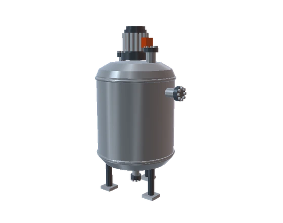
3D MODEL PROCESS EQUIPMENT FABRICATION / EST. 2006
Built with
precision.
Engineered
for industry.
Pharmaceutical and chemical process equipment fabrication in the heart of Ankleshwar GIDC.
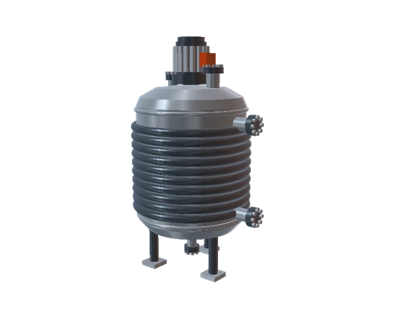
INTERACTIVE 3DUE / 01
FEATURED EQUIPMENTLimpet Coil ReactorIllustrative model · drag to rotate
01 — 06 / EQUIPMENT FAMILIESSCROLL TO EXPLORE ↓
2006.ESTABLISHED
45.EQUIPMENT ENTRIES
06.PRODUCT CATEGORIES
GJ.ANKLESHWAR, INDIA
01 / EQUIPMENT PORTFOLIO
Precision across
six disciplines.
Explore our range of process equipment, organized by application and construction type. Every project starts with your requirements.
THE COMPLETE RANGE
Equipment catalogue
45 equipment entries
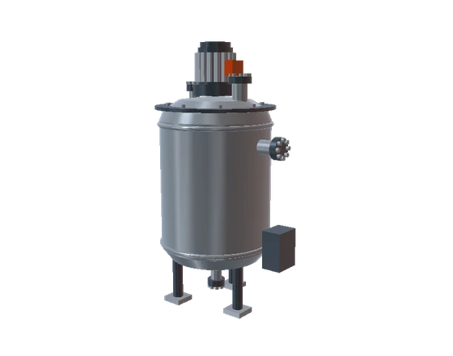
3D MODEL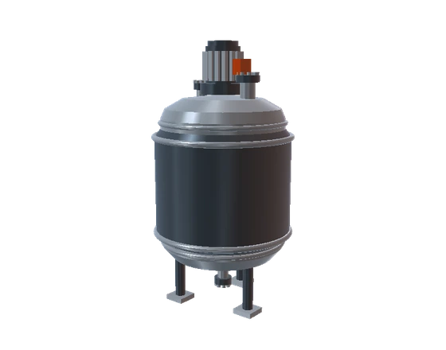
3D MODEL 3D MODEL
3D MODEL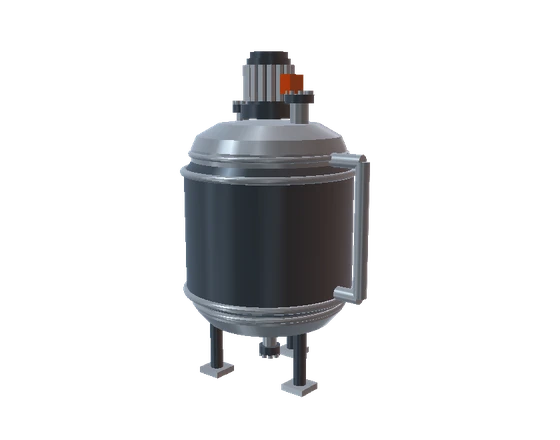
3D MODEL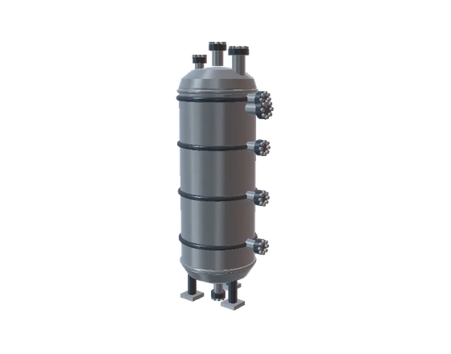
3D MODEL 3D MODEL
3D MODEL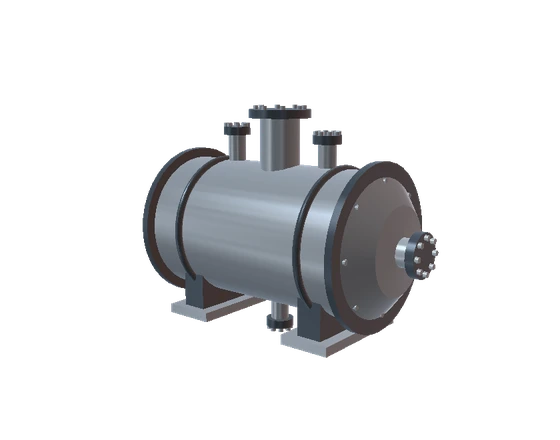
3D MODEL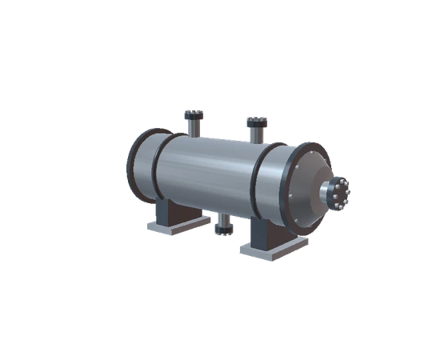
3D MODEL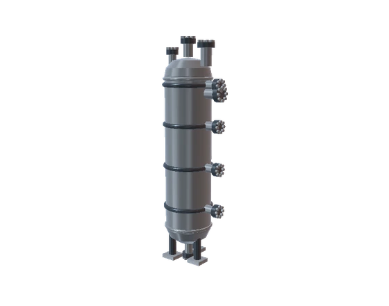
3D MODEL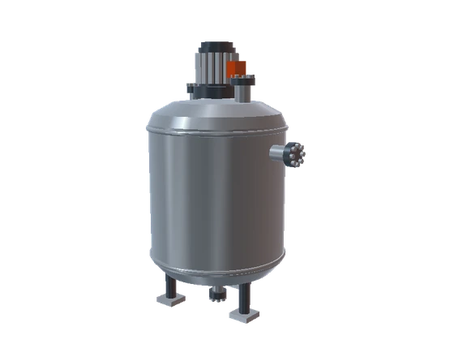
3D MODEL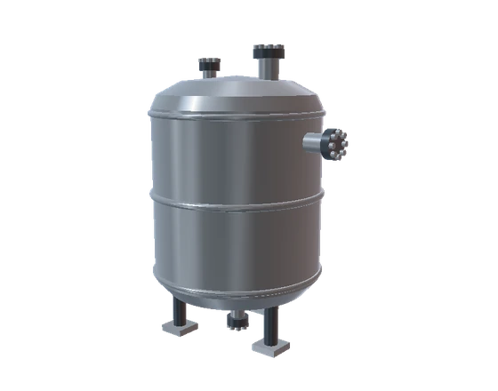
3D MODEL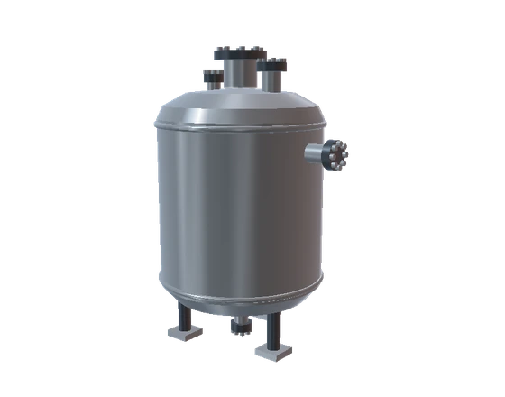
3D MODEL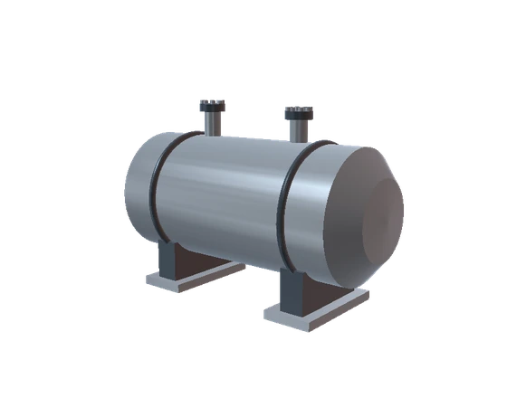
3D MODEL 3D MODEL
3D MODEL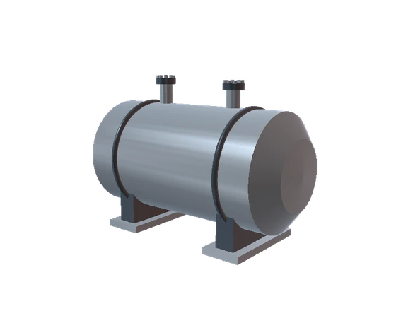
3D MODEL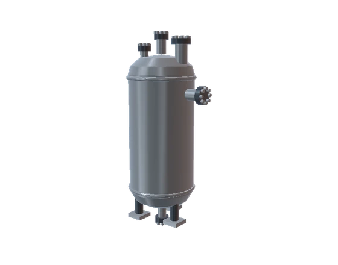
3D MODEL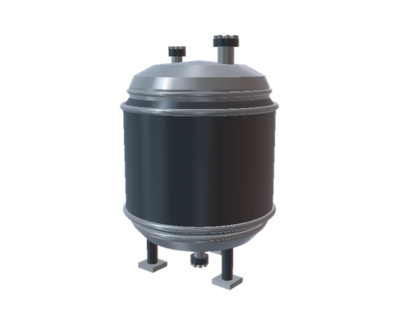
3D MODEL 3D MODEL
3D MODEL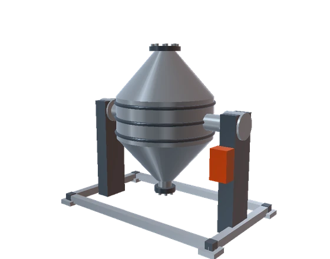
3D MODEL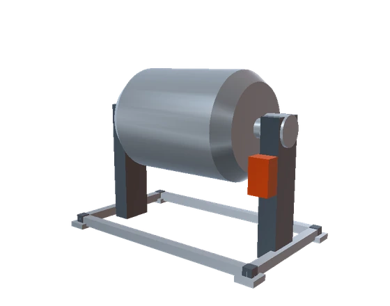
3D MODEL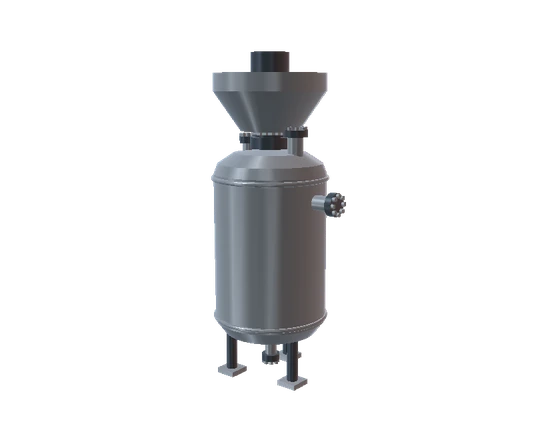
3D MODEL 3D MODEL
3D MODEL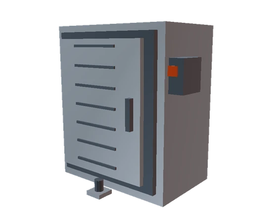
3D MODEL 3D MODEL
3D MODEL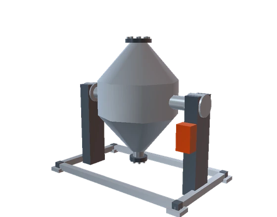
3D MODEL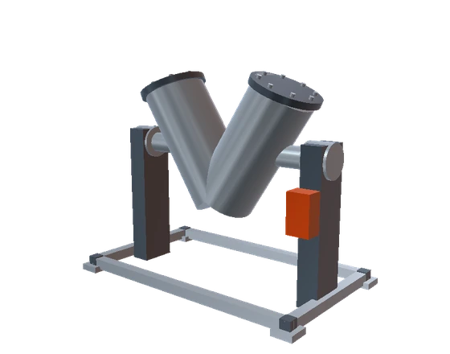
3D MODEL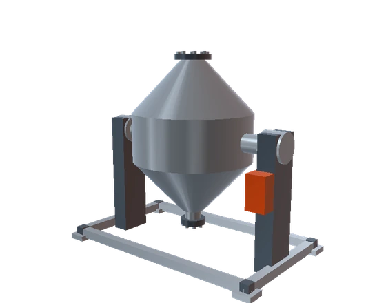
3D MODEL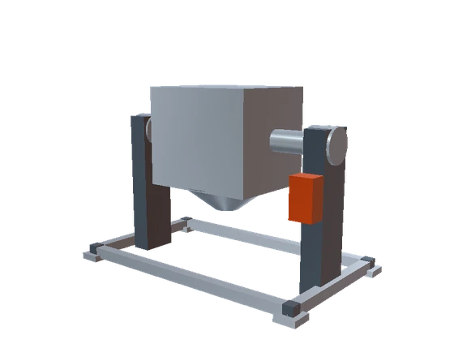
3D MODEL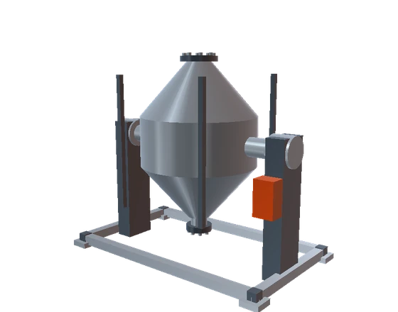
3D MODEL 3D MODEL
3D MODEL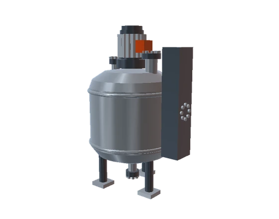
3D MODEL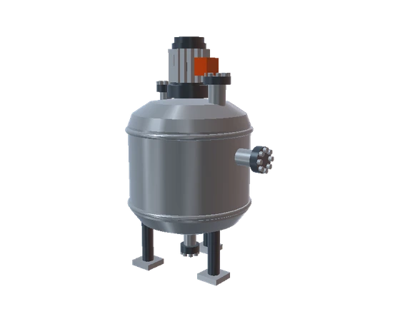
3D MODEL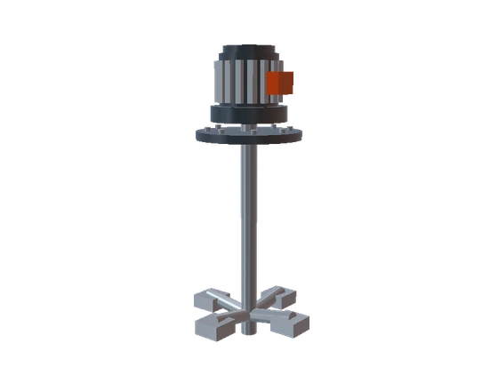
3D MODEL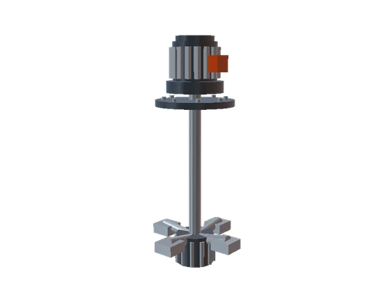
3D MODEL 3D MODEL
3D MODEL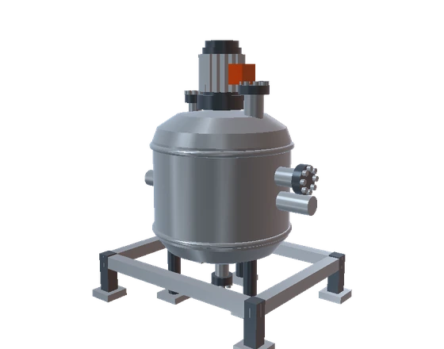
3D MODEL 3D MODEL
3D MODEL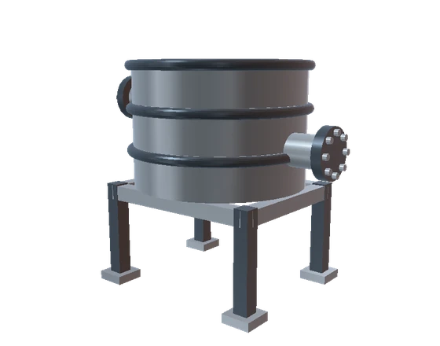
3D MODELNo matching equipment. Try a different search.
02 / ABOUT UNITY
Fabrication is
in our foundation.
Established in 2006, Unity Engineering is a process equipment fabrication company based in Ankleshwar GIDC, Gujarat. Our equipment portfolio serves pharmaceutical, chemical and industrial processing requirements.
From reactors and vessels to thermal, drying and mixing equipment, we work with project-specific fabrication requirements.
UE
Niraj Kumar ShahOwner · Unity Engineering
UE
EST. 2006ILLUSTRATIVE EQUIPMENT MODEL
03 / PROJECT APPROACH
From requirement
to fabrication.
A project-specific workflow aligned with your equipment duty, drawings and agreed technical requirements.
Technical discussion
Understand process duty, materials, capacity and operating conditions.
Drawing & scope
Review specifications and agree on construction and project scope.
Fabrication
Execute the agreed fabrication and assembly requirements.
Inspection & delivery
Coordinate specified checks, documentation and dispatch.
Specific machinery, testing, codes and certifications are subject to confirmation for each project.
04 / LET’S CONNECT
Let’s build
what’s next.
Share your equipment requirements with Unity Engineering.